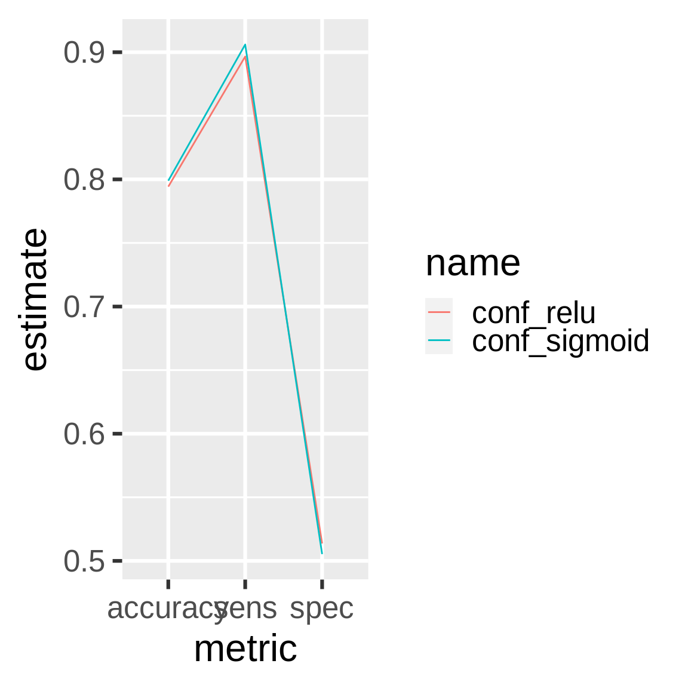

Chapter 9 Customer churn and deep learning
drake is designed for workflows with long runtimes, and a major use case is deep learning. This chapter demonstrates how to leverage drake to manage a deep learning workflow. The original example comes from a blog post by Matt Dancho, and the chapter’s content itself comes directly from this R notebook, part of an RStudio Solutions Engineering example demonstrating TensorFlow in R. The notebook is modified and redistributed under the terms of the Apache 2.0 license, copyright RStudio (details here).
9.1 Packages
First, we load our packages into a fresh R session.
9.2 Functions
drake is R-focused and function-oriented. We create functions to preprocess the data,
prepare_recipe <- function(data) {
data %>%
training() %>%
recipe(Churn ~ .) %>%
step_rm(customerID) %>%
step_naomit(all_outcomes(), all_predictors()) %>%
step_discretize(tenure, options = list(cuts = 6)) %>%
step_log(TotalCharges) %>%
step_mutate(Churn = ifelse(Churn == "Yes", 1, 0)) %>%
step_dummy(all_nominal(), -all_outcomes()) %>%
step_center(all_predictors(), -all_outcomes()) %>%
step_scale(all_predictors(), -all_outcomes()) %>%
prep()
}define a keras model, exposing arguments to set the dimensionality and activation functions of the layers,
define_model <- function(rec, units1, units2, act1, act2, act3) {
input_shape <- ncol(
juice(rec, all_predictors(), composition = "matrix")
)
keras_model_sequential() %>%
layer_dense(
units = units1,
kernel_initializer = "uniform",
activation = act1,
input_shape = input_shape
) %>%
layer_dropout(rate = 0.1) %>%
layer_dense(
units = units2,
kernel_initializer = "uniform",
activation = act2
) %>%
layer_dropout(rate = 0.1) %>%
layer_dense(
units = 1,
kernel_initializer = "uniform",
activation = act3
)
}train a model,
train_model <- function(
rec,
units1 = 16,
units2 = 16,
act1 = "relu",
act2 = "relu",
act3 = "sigmoid"
) {
model <- define_model(
rec = rec,
units1 = units1,
units2 = units2,
act1 = act1,
act2 = act2,
act3 = act3
)
compile(
model,
optimizer = "adam",
loss = "binary_crossentropy",
metrics = c("accuracy")
)
x_train_tbl <- juice(
rec,
all_predictors(),
composition = "matrix"
)
y_train_vec <- juice(rec, all_outcomes()) %>%
pull()
fit(
object = model,
x = x_train_tbl,
y = y_train_vec,
batch_size = 32,
epochs = 32,
validation_split = 0.3,
verbose = 0
)
model
}compare predictions against reality,
confusion_matrix <- function(data, rec, model) {
testing_data <- bake(rec, testing(data))
x_test_tbl <- testing_data %>%
select(-Churn) %>%
as.matrix()
y_test_vec <- testing_data %>%
select(Churn) %>%
pull()
yhat_keras_class_vec <- model %>%
predict_classes(x_test_tbl) %>%
as.factor() %>%
fct_recode(yes = "1", no = "0")
yhat_keras_prob_vec <-
model %>%
predict_proba(x_test_tbl) %>%
as.vector()
test_truth <- y_test_vec %>%
as.factor() %>%
fct_recode(yes = "1", no = "0")
estimates_keras_tbl <- tibble(
truth = test_truth,
estimate = yhat_keras_class_vec,
class_prob = yhat_keras_prob_vec
)
estimates_keras_tbl %>%
conf_mat(truth, estimate)
}and compare the performance of multiple models.
compare_models <- function(...) {
name <- match.call()[-1] %>%
as.character()
df <- map_df(list(...), summary) %>%
filter(.metric %in% c("accuracy", "sens", "spec")) %>%
mutate(name = rep(name, each = n() / length(name))) %>%
rename(metric = .metric, estimate = .estimate)
ggplot(df) +
geom_line(aes(x = metric, y = estimate, color = name, group = name)) +
theme_gray(24)
}9.3 Plan
Next, we define our workflow in a drake plan. We will prepare the data, train different models with different activation functions, and compare the models in terms of performance.
activations <- c("relu", "sigmoid")
plan <- drake_plan(
data = read_csv(file_in("customer_churn.csv"), col_types = cols()) %>%
initial_split(prop = 0.3),
rec = prepare_recipe(data),
model = target(
train_model(rec, act1 = act),
format = "keras", # Supported in drake > 7.5.2 to store models properly.
transform = map(act = !!activations)
),
conf = target(
confusion_matrix(data, rec, model),
transform = map(model, .id = act)
),
metrics = target(
compare_models(conf),
transform = combine(conf)
)
)The plan is a data frame with the steps we are going to do.
plan
#> # A tibble: 7 x 3
#> target command format
#> <chr> <expr> <chr>
#> 1 conf_relu confusion_matrix(data, rec, model_relu) … <NA>
#> 2 conf_sigmoid confusion_matrix(data, rec, model_sigmoid) … <NA>
#> 3 data read_csv(file_in("customer_churn.csv"), col_types = cols(… <NA>
#> 4 metrics compare_models(conf_relu, conf_sigmoid) … <NA>
#> 5 model_relu train_model(rec, act1 = "relu") … keras
#> 6 model_sigmo… train_model(rec, act1 = "sigmoid") … keras
#> 7 rec prepare_recipe(data) … <NA>9.4 Dependency graph
The graph visualizes the dependency relationships among the steps of the workflow.
9.5 Run the models
Call make() to actually run the workflow.
9.6 Inspect the results
The two models performed about the same.

9.7 Add models
Let’s try the softmax activation function.
activations <- c("relu", "sigmoid", "softmax")
plan <- drake_plan(
data = read_csv(file_in("customer_churn.csv"), col_types = cols()) %>%
initial_split(prop = 0.3),
rec = prepare_recipe(data),
model = target(
train_model(rec, act1 = act),
format = "keras", # Supported in drake > 7.5.2 to store models properly.
transform = map(act = !!activations)
),
conf = target(
confusion_matrix(data, rec, model),
transform = map(model, .id = act)
),
metrics = target(
compare_models(conf),
transform = combine(conf)
)
)make() skips the relu and sigmoid models because they are already up to date. (Their dependencies did not change.) Only the softmax model needs to run.

9.9 Update your code
If you change upstream functions, even nested ones, drake automatically refits the affected models. Let’s increase dropout in both layers.
define_model <- function(rec, units1, units2, act1, act2, act3) {
input_shape <- ncol(
juice(rec, all_predictors(), composition = "matrix")
)
keras_model_sequential() %>%
layer_dense(
units = units1,
kernel_initializer = "uniform",
activation = act1,
input_shape = input_shape
) %>%
layer_dropout(rate = 0.15) %>% # Changed from 0.1 to 0.15.
layer_dense(
units = units2,
kernel_initializer = "uniform",
activation = act2
) %>%
layer_dropout(rate = 0.15) %>% # Changed from 0.1 to 0.15.
layer_dense(
units = 1,
kernel_initializer = "uniform",
activation = act3
)
}All the models and downstream results are affected.
9.10 History and provenance
drake version 7.5.0 and above tracks history and provenance. You can see which models you ran, when you ran them, how long they took, and which settings you tried (i.e. named arguments to function calls in your commands).
history <- drake_history()
history
#> # A tibble: 17 x 10
#> target current built exists hash command seed runtime prop act1
#> <chr> <lgl> <chr> <lgl> <chr> <chr> <int> <dbl> <dbl> <chr>
#> 1 conf_r… FALSE 2020-07… TRUE aa02… "confusion_… 4.05e8 0.499 NA <NA>
#> 2 conf_r… TRUE 2020-07… TRUE e825… "confusion_… 4.05e8 0.306 NA <NA>
#> 3 conf_s… FALSE 2020-07… TRUE 0450… "confusion_… 1.93e9 0.308 NA <NA>
#> 4 conf_s… TRUE 2020-07… TRUE f94a… "confusion_… 1.93e9 0.299 NA <NA>
#> 5 conf_s… FALSE 2020-07… TRUE 9b29… "confusion_… 1.80e9 0.297 NA <NA>
#> 6 conf_s… TRUE 2020-07… TRUE a922… "confusion_… 1.80e9 0.541 NA <NA>
#> 7 data TRUE 2020-07… TRUE ca84… "read_csv(f… 1.29e9 0.0810 0.3 <NA>
#> 8 metrics FALSE 2020-07… TRUE 4335… "compare_mo… 1.21e9 0.0430 NA <NA>
#> 9 metrics FALSE 2020-07… TRUE 7b3a… "compare_mo… 1.21e9 0.0580 NA <NA>
#> 10 metrics TRUE 2020-07… TRUE 87b1… "compare_mo… 1.21e9 0.0500 NA <NA>
#> 11 model_… FALSE 2020-07… TRUE 40f1… "train_mode… 1.47e9 6.68 NA relu
#> 12 model_… TRUE 2020-07… TRUE fe12… "train_mode… 1.47e9 4.05 NA relu
#> 13 model_… FALSE 2020-07… TRUE 2a99… "train_mode… 1.26e9 4.08 NA sigm…
#> 14 model_… TRUE 2020-07… TRUE dc8f… "train_mode… 1.26e9 4.07 NA sigm…
#> 15 model_… FALSE 2020-07… TRUE fa27… "train_mode… 8.05e8 4.37 NA soft…
#> 16 model_… TRUE 2020-07… TRUE f60d… "train_mode… 8.05e8 4.32 NA soft…
#> 17 rec TRUE 2020-07… TRUE 223e… "prepare_re… 6.29e8 0.397 NA <NA>And as long as you did not run clean(garbage_collection = TRUE), you can get the old data back. Let’s find the oldest run of the relu model.
hash <- history %>%
filter(act1 == "relu") %>%
pull(hash) %>%
head(n = 1)
drake_cache()$get_value(hash)
#> Model
#> Model: "sequential"
#> ________________________________________________________________________________
#> Layer (type) Output Shape Param #
#> ================================================================================
#> dense (Dense) (None, 16) 576
#> ________________________________________________________________________________
#> dropout (Dropout) (None, 16) 0
#> ________________________________________________________________________________
#> dense_1 (Dense) (None, 16) 272
#> ________________________________________________________________________________
#> dropout_1 (Dropout) (None, 16) 0
#> ________________________________________________________________________________
#> dense_2 (Dense) (None, 1) 17
#> ================================================================================
#> Total params: 865
#> Trainable params: 865
#> Non-trainable params: 0
#> ________________________________________________________________________________